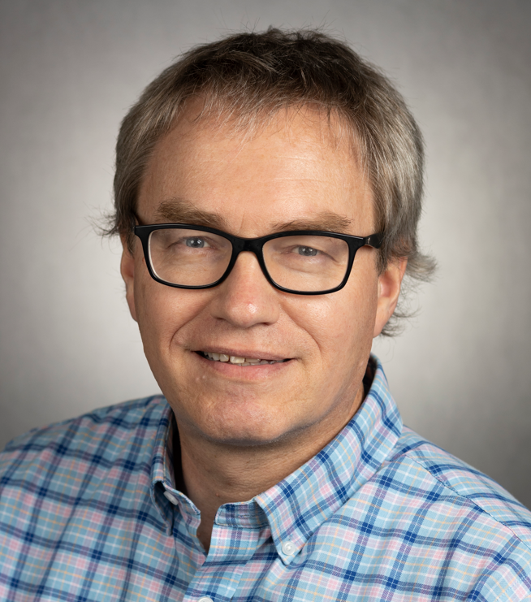

Albert De Vries
Welcome! I am a professor in the Department of Animal Sciences at the University of Florida. My work focuses on dairy herd management science, combining research, Extension, and teaching to improve the economics of dairy farm operations through data-driven decision making and optimization techniques.
In research, my students and I hope to make a contribution to dairy herd management science. This field tries to improve dairy farm management by valuing different decision alternatives and information under herd constraints, such as cattle replacement decisions, reproductive management decisions, and the use and value of genetics information. We typically use simulation modeling or optimization, such as dynamic programming, linear programming, Markov chains, and Monte Carlo simulation. Excel is a favorite platform, but we also use SAS, R, JAVA, Python, and Powershell. Another part of our research effort is analysis of large data sets to quantify the performance of dairy cows and herds, for example risk factors for culling, reproductive success, and seasonality of production. These results are often useful inputs in the modeling work.
In the Spring semester I teach ANS 3250L Dairy Cattle Practicum and ANS 3251 Biology and Management of Dairy Cattle. ANS 3251 is a survey course with dual focus on biology and implications for management. ANS 3250L is a practicum course that deepens the knowledge gained in ANS 3251. These courses are popular with students who want to learn more about dairy farming, but not necessarily want to make a career out of it. I am an advisor to the Dairy Science Club and teach a short course in advanced herd dynamics at the US Dairy Training and Education Consortium in Clovis, New Mexico.
My Extension efforts mostly follow directly from my research efforts. I write and teach about valuing decision alternatives on dairy farms, with a focus on the economics of cattle replacement, reproduction, and genetics. Part of the effort is also making decision support tools available to the public. We work with dairy farmers and the allied industry. In return, the Extension work allows us to focus on questions that are important to the dairy industry in our research program. I also maintain the dairy Extension email listserv, and I edit the quarterly Dairy Update newsletter. I am also available for consulting.
My professional service and community has been mostly through the American Dairy Science Association.

University of Florida\IFAS
Department of Animal Sciences
PO Box 110910
Gainesville, FL 32611
University of Florida\IFAS
Larson Dairy Science building
2250 Shealy Drive
Gainesville, FL 32608
devries at ufl.edu